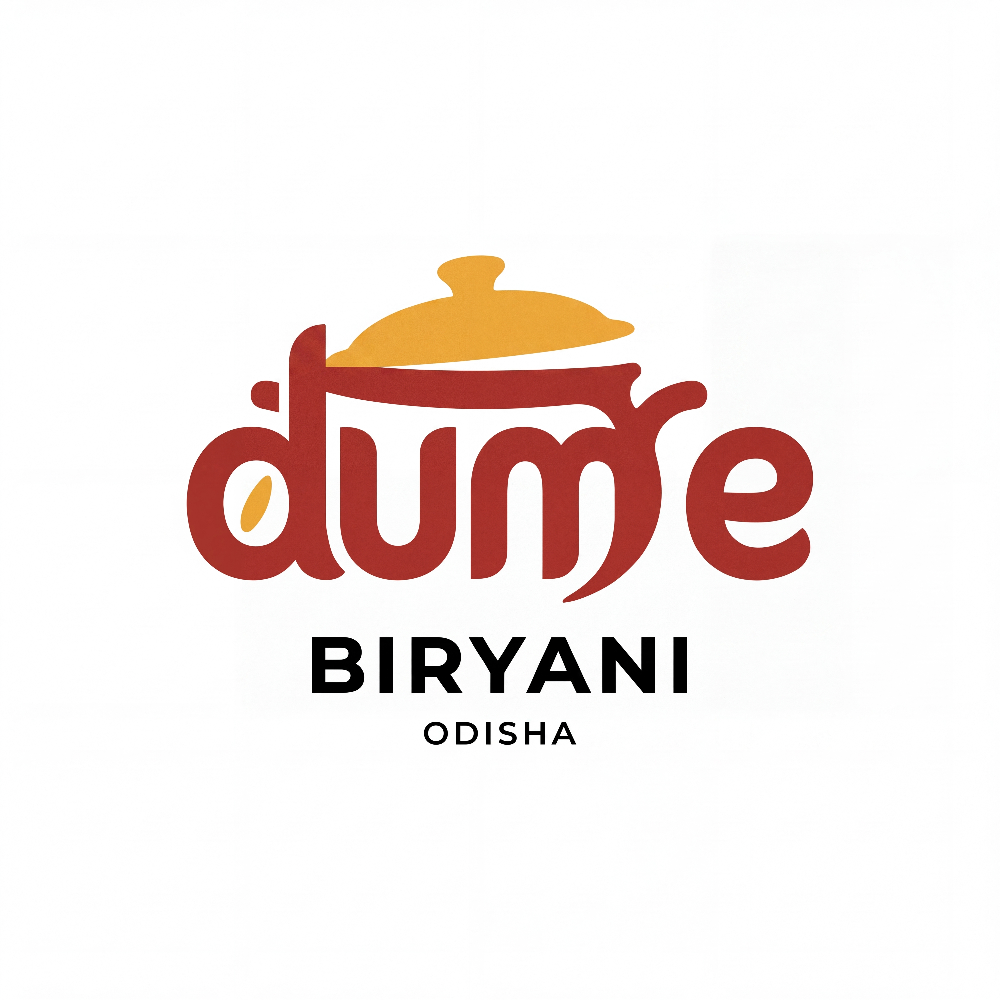
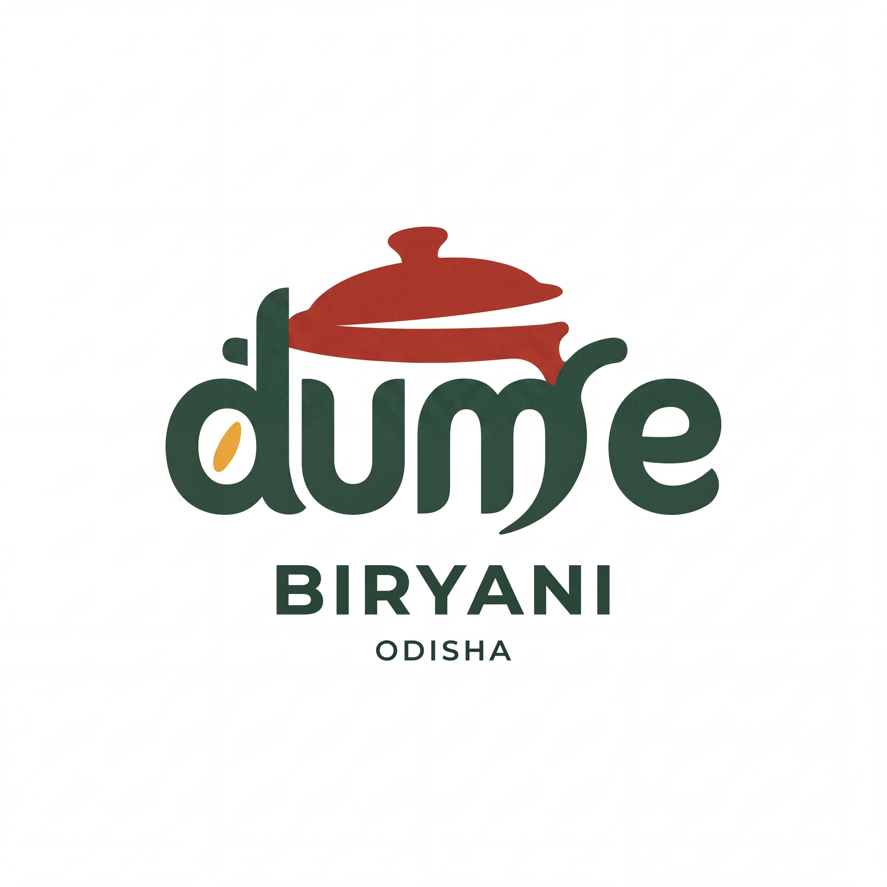
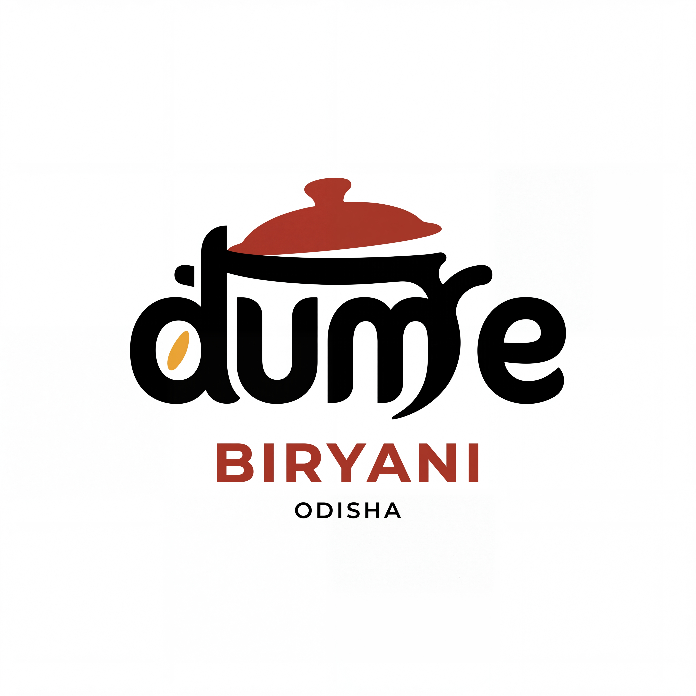
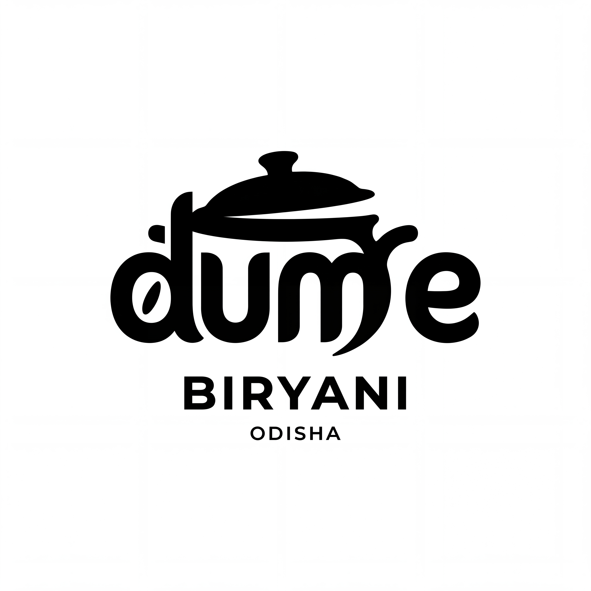
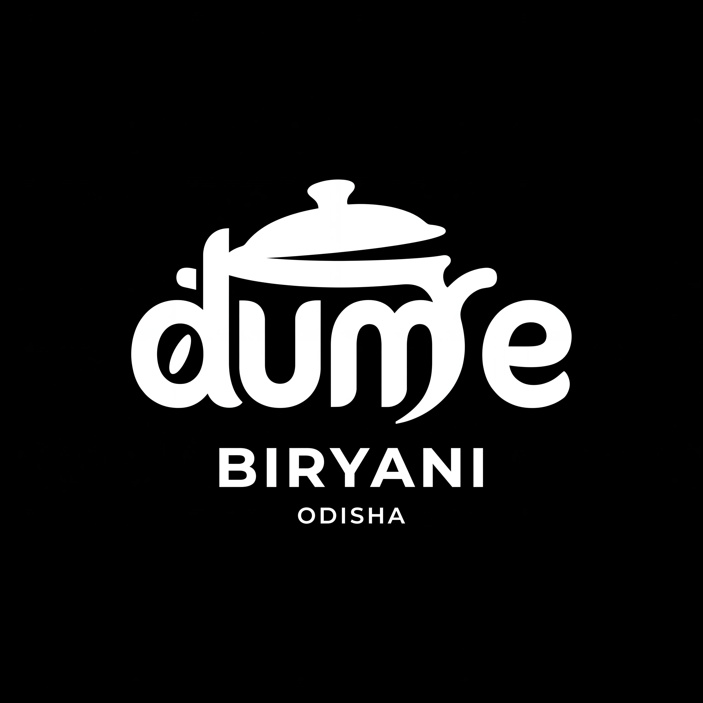

Recommended multicolour treatment
Saffron lid + chilli lettering
A saffron lid and rice grain, chilli wordmark and black descriptors. Colour now covers the pot lid as well as the lettering.
Download 4096 × 4096 JPEGThe chosen pot-lid wordmark now combines different flat colours across the lid, lettering and supporting text, alongside black and white versions.
A saffron lid sits above chilli-red lettering. The rice grain repeats the saffron accent, while black descriptors keep the name clear. The lid and wordmark carry substantial areas of colour.
Explore colour & monochrome
Download all five 4K logo treatments
Keep the integrated handi lid, the custom dum e lettering and the rice-grain detail together. Use the saffron-lid and chilli-lettering treatment by default. The alternatives explore chilli with green or black; monochrome versions remain available for reproduction.
Showing all 5 treatments
A saffron lid and rice grain, chilli wordmark and black descriptors. Colour now covers the pot lid as well as the lettering.
Download 4096 × 4096 JPEG
A chilli lid, leaf-green lettering and descriptors, and a saffron rice grain. The two large forms use contrasting colours.
Download 4096 × 4096 JPEG
A chilli lid and BIRYANI descriptor, black wordmark, and saffron rice grain. Warm colours occupy visible parts of the identity.
Download 4096 × 4096 JPEG
All logo elements use black. Retained for monochrome reproduction.
Download 4096 × 4096 JPEG
All logo elements use white on a black field. Retained for dark backgrounds.
Download 4096 × 4096 JPEGA welcoming biryani specialist in Odisha offering authentic biryani in different flavours and varieties.
Warm, generous, flavourful, contemporary and confident.
Simple, inviting and appetite-led. “Find your favourite. Share a handi.” Keep recipe and sourcing claims accurate.
Authentic biryani. A flavour for every craving.
Optional campaign lineMany flavours. One love.
Name structure: dum e is the expressive wordmark; BIRYANI identifies the category; ODISHA is the location signature. Preserve this hierarchy.
#FFFFFFMain canvas and breathing space.
#000000Descriptors, supporting type and monochrome treatment.
#A63825Primary wordmark colour and alternate lid colour.
#ECAA35Primary lid and rice-grain colour; avoid small text on white.
#254A39Optional alternate colour treatment.
Default combination: saffron lid + chilli wordmark + saffron rice grain + black descriptors on white. Use colours by component: lid, wordmark, rice grain and descriptors. Preserve those assignments consistently across applications.
Supporting layouts: Start with generous white space and black text. Use chilli for a heading or brand feature and saffron for a small highlight. Keep green as an optional alternate rather than rotating colours on every post.
These HEX values are design targets. Nano Banana raster pixels are approximate; exact flat inks are a later production step.
| Target colour pair | Contrast | Supporting text guidance |
|---|---|---|
| Black on white | 21.00:1 | Suitable for ordinary text |
| Chilli on white | 6.53:1 | Suitable for ordinary text |
| Saffron on white | 2.03:1 | Accent only; avoid small text |
| Leaf green on white | 9.92:1 | Suitable for ordinary text |
Reserve at least half the height of the lowercase e around the complete lockup. Keep the pot lid and the m flourish fully inside the safe area.
For review and digital placement, use the full lockup at 240 px wide or larger. This is a conservative starting point, not a validated production minimum. Tiny uses need a dedicated simplified cut.
The logo lettering is custom generated artwork, not a named font. For menus and guide copy, use a clear sans-serif such as Arial / Helvetica with bold dish names and regular descriptions.
Keep: original proportions, readable counters, the white gap below the lid, and the spacing between the main wordmark, BIRYANI and ODISHA.
Avoid: stretching, drop shadows, gradients, extra outlines, recolouring individual letters, cropping the lid, or recreating the wordmark using a stock font.
Use the full logo on introductory posts. Keep product photographs separate from the mark, with dark headings on white. A future profile cut should preserve the d, rice grain and lid cue.
Use the primary logo on a clean white label. Place flavour names and order details outside the logo clear space. The black version supports monochrome print; the rice-grain accent can inform simple supporting graphics.
Keep dish names and prices aligned in a readable sans-serif. Use the complete lockup where Odisha can be read. For a dark sign, use the white-on-black treatment.
Every new multicolour logo treatment was created using Nano Banana MCP only, with the selected artwork as a reference. No SVG reconstruction or manual image recolouring was used.
The three new multicolour treatments and two retained monochrome versions are high-resolution raster images with their backgrounds included. Their lettering and overall structure have been visually checked; generated copies can have small contour differences. They are not transparent files or editable vector masters.
Use these files for design review and digital artwork. Final print masters require exact colour, transparency and consistent vector geometry. The initial 1024 px refinement is retained as process history; use the larger treatment files above.